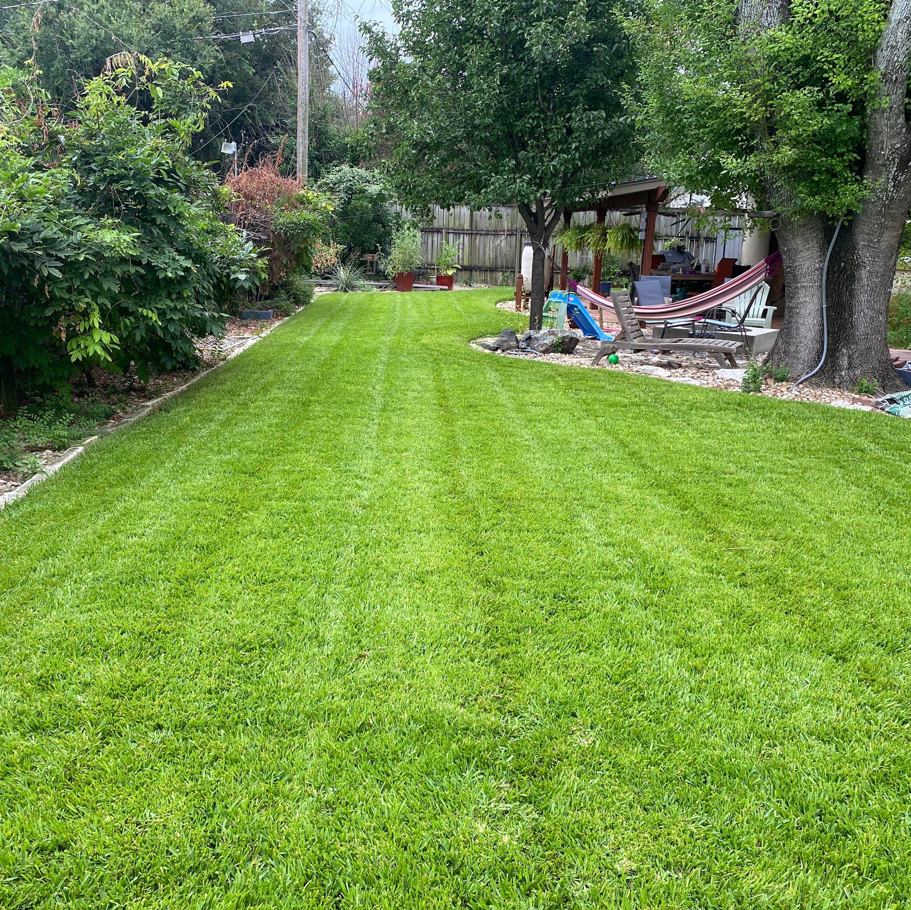
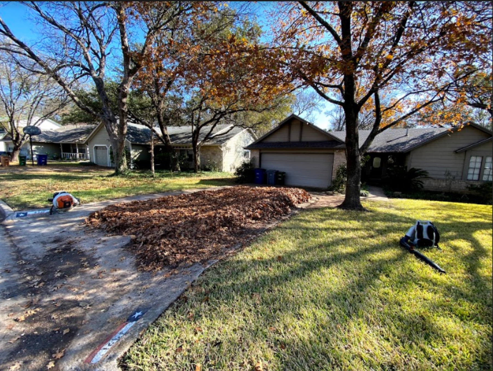
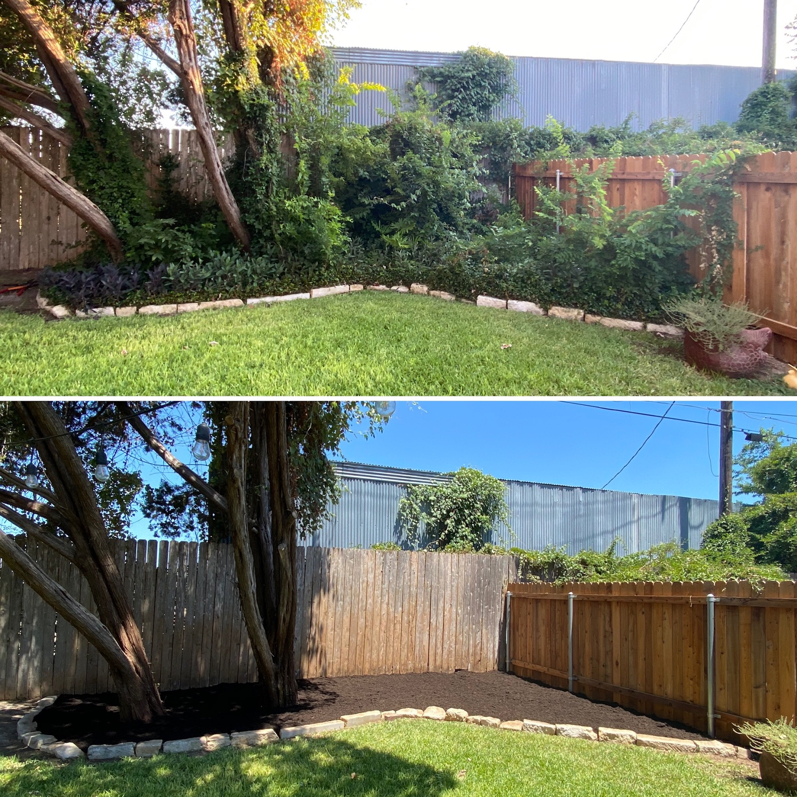
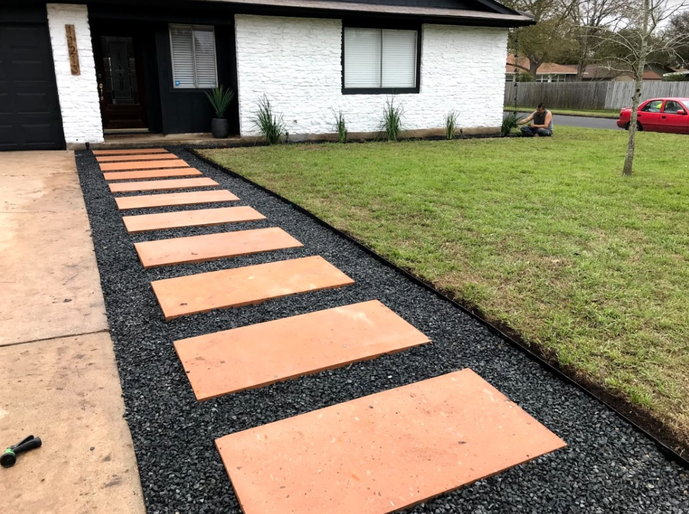
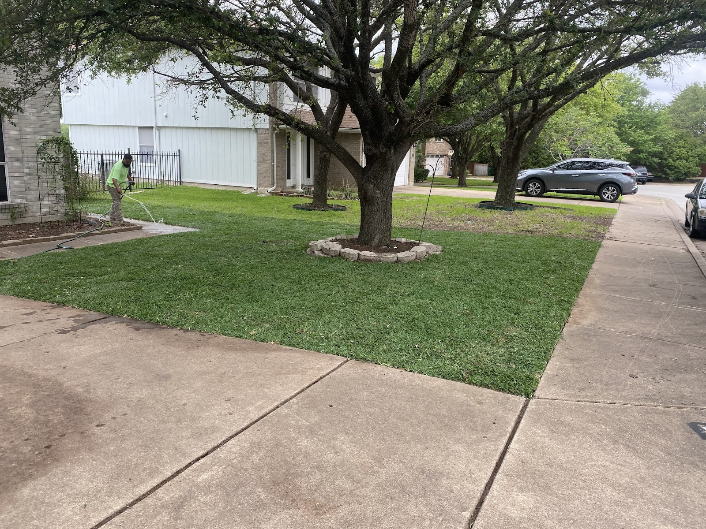
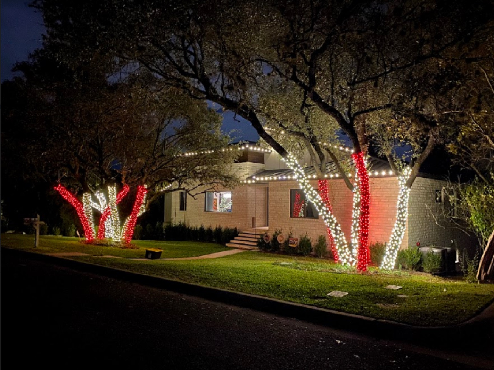
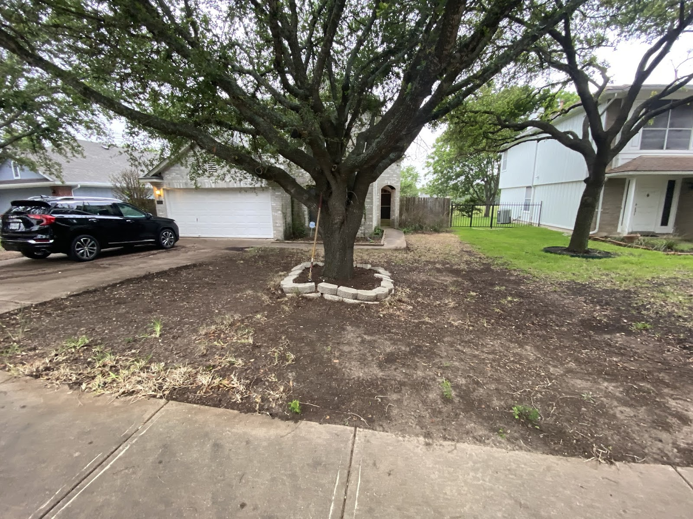
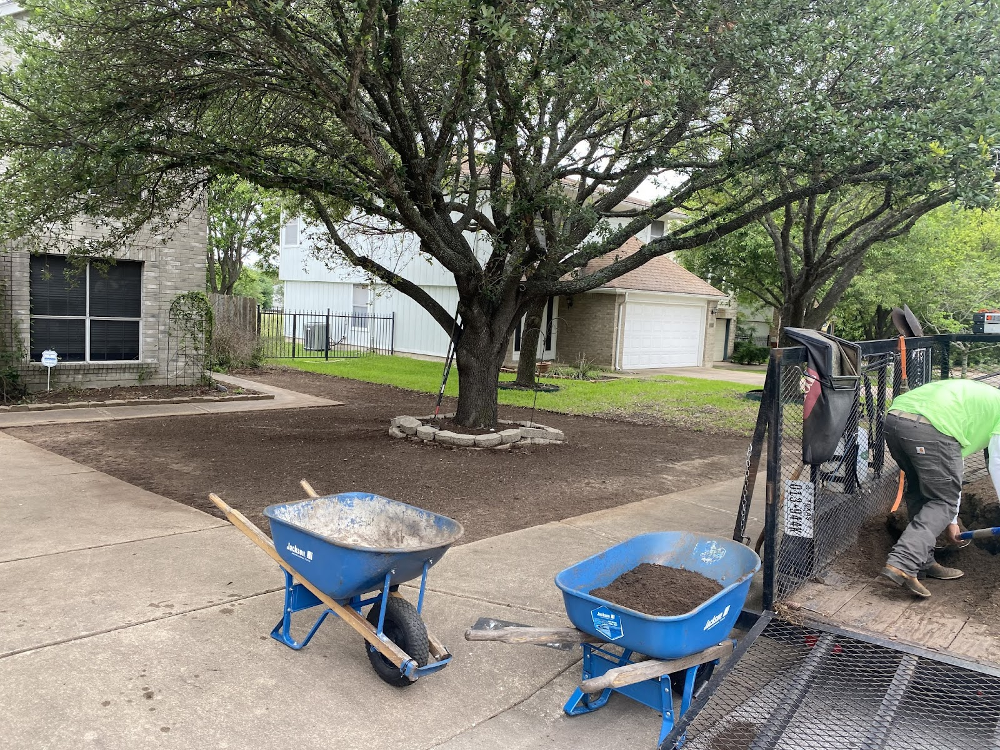
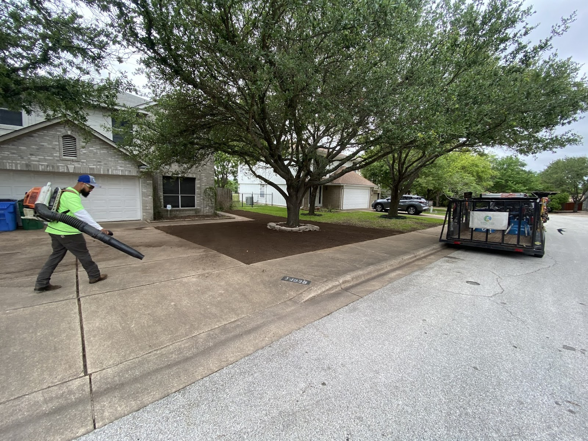

Year-round mowing, seasonal cleanups, mulch, sod, gravel beds and holiday lights for North Austin and Cedar Park homes. Book your seasonal clean-up now.
82 Google reviews from local customers
Marathon keeps North Austin and Cedar Park yards sharp all year: weekly mowing and edging, leaf and seasonal cleanups, fresh mulch beds, sod, gravel beds with steel edging, stepping-stone walkways, and holiday lights on rooflines and trees. Zach keeps you posted on every visit.
Mowing, edging, trimming and blowing on a regular schedule, so the yard looks sharp every week of the year.

Fall leaves, spring cleanups and overgrown yards cleared out, even while you're out of town.

Overgrown beds cut back, cleared and finished with a fresh layer of mulch.

Black gravel beds with steel edging and stepping-stone walkways that stay clean and low-maintenance.

New sod laid and watered in, plus shrub plantings, turning the worst yard on the block into one of the best.

Rooflines traced and tree trunks wrapped in lights for homes and event venues.



I can genuinely say that these guys are extremely thorough with their work. It's been an absolute pleasure having them care for our property. If you want a local company that actually cares about their clients, you've found the best in town. Highly recommend Marathon Lawn Care & Services!
We've been using Marathon lawn care for our properties for about 2 years now and Zach and the team are always friendly, accommodating, professional, and do excellent work at a fair price. Zach is an excellent communicator and so consistent. He's never missed a service with the exception of severe weather in which case he promptly reschedules. This is THE go to lawn care service in the area.
Zach and his team are fantastic. They are very thorough, courteous, efficient, and professional. Their prices are extremely reasonable and they are great at communicating when they will be coming by to work on the yard and their plans if the weather causes a delay. If you need reliable lawn service in Austin or Cedar Park, give Marathon Lawn a look.
I contacted Zach at Marathon Lawn Services for an estimate on a springtime lawn cleanup. I was out of town at a conference and Zach was able to get an estimate to me quickly and once approved they took care of the job and sent me an invoice that I was able to pay remotely. When I returned from my trip my yard looked great! Very convenient and saved me a ton of time.
Exceeded expectations! I could write more but honestly if you are in their service area, you should use them. I used to have the ugliest yard on the block. Now I'm easily a top 3 contender.
I can genuinely say that these guys are extremely thorough with their work. It's been an absolute pleasure having them care for our property. If you want a local company that actually cares about their clients, you've found the best in town. Highly recommend Marathon Lawn Care & Services!
We've been using Marathon lawn care for our properties for about 2 years now and Zach and the team are always friendly, accommodating, professional, and do excellent work at a fair price. Zach is an excellent communicator and so consistent. He's never missed a service with the exception of severe weather in which case he promptly reschedules. This is THE go to lawn care service in the area.
Zach and his team are fantastic. They are very thorough, courteous, efficient, and professional. Their prices are extremely reasonable and they are great at communicating when they will be coming by to work on the yard and their plans if the weather causes a delay. If you need reliable lawn service in Austin or Cedar Park, give Marathon Lawn a look.
I contacted Zach at Marathon Lawn Services for an estimate on a springtime lawn cleanup. I was out of town at a conference and Zach was able to get an estimate to me quickly and once approved they took care of the job and sent me an invoice that I was able to pay remotely. When I returned from my trip my yard looked great! Very convenient and saved me a ton of time.
Exceeded expectations! I could write more but honestly if you are in their service area, you should use them. I used to have the ugliest yard on the block. Now I'm easily a top 3 contender.
Two minutes online. Add photos if you have them.
Choose a visit window that works for you. We confirm it with you.
A clear estimate before any work starts.
“I used to have the ugliest yard on the block. Now I'm easily a top 3 contender.”
Chris Simonton, Google review, sod installation, May 2021